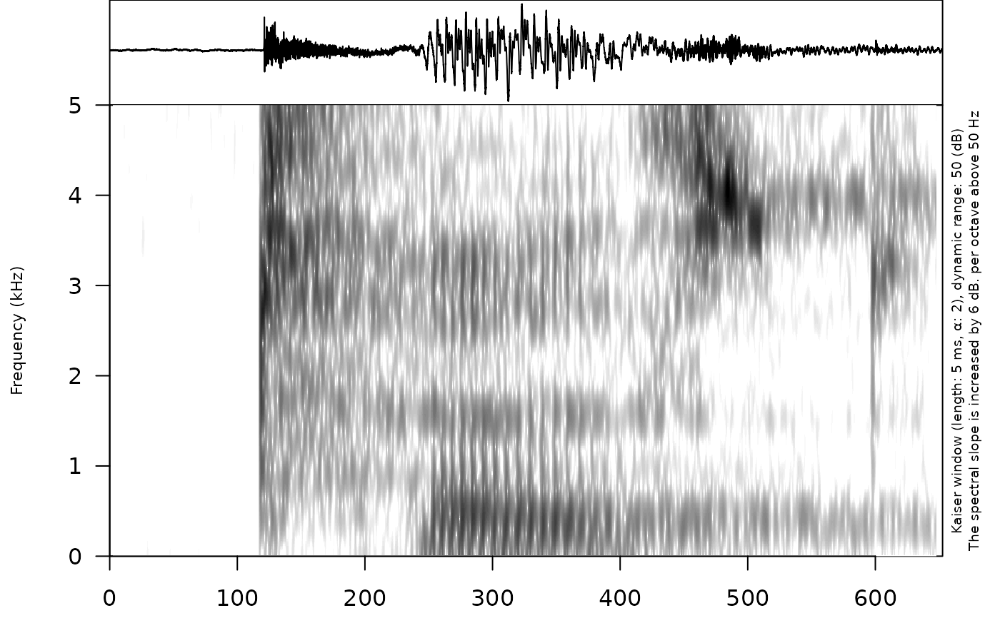
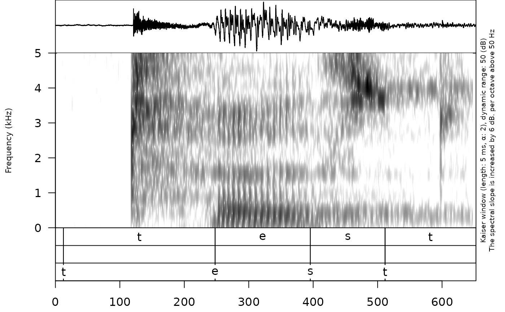
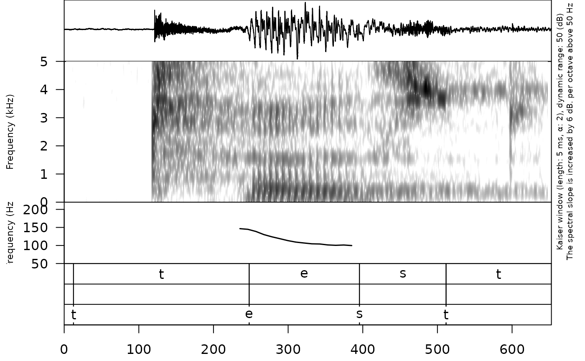
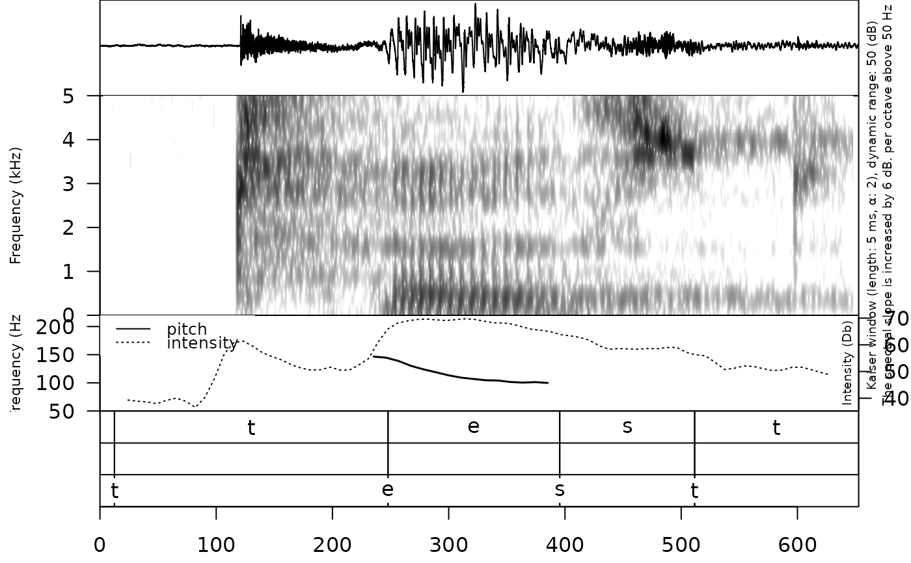
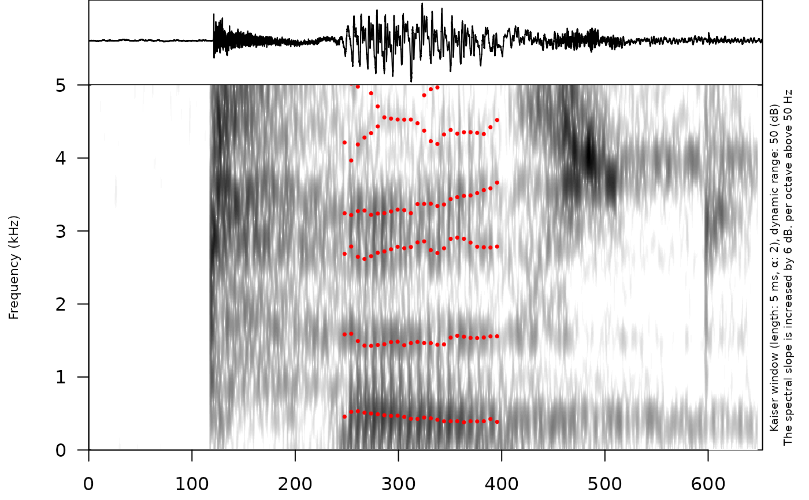

Create oscilogram and spectrogram plot.
Usage
draw_sound(
file_name,
annotation = NULL,
from = NULL,
to = NULL,
zoom = NULL,
text_size = 1,
output_file = NULL,
title = NULL,
freq_scale = "kHz",
frequency_range = c(0, 5),
dynamic_range = 50,
window_length = 5,
window = "kaiser",
windowparameter = -1,
preemphasisf = 50,
spectrum_info = TRUE,
raven_annotation = NULL,
formant_df = NULL,
pitch = NULL,
pitch_range = c(75, 350),
intensity = NULL,
output_width = 750,
output_height = 500,
output_units = "px",
sounds_from_folder = NULL,
textgrids_from_folder = NULL,
pic_folder_name = "pics",
title_as_filename = TRUE,
prefix = NULL,
suffix = NULL,
autonumber = FALSE
)Arguments
- file_name
a sound file
- annotation
a source for annotation files (path to TextGrid file or dataframe created from other linguistic types, e. g. via
textgrid_to_df(),eaf_to_df()or other functions)- from
Time in seconds at which to start extraction.
- to
Time in seconds at which to stop extraction.
- zoom
numeric vector of zoom window time (in seconds). It will draw the whole oscilogram and part of the spectrogram.
- text_size
numeric, text size (default = 1).
- output_file
the name of the output file
- title
the title for the plot
- freq_scale
a string indicating the type of frequency scale. Supported types are: "Hz" and "kHz".
- frequency_range
vector with the range of frequencies to be displayed for the spectrogram up to a maximum of fs/2. By default this is set to 0-5 kHz.
- dynamic_range
values greater than this many dB below the maximum will be displayed in the same color
- window_length
the desired analysis window length in milliseconds.
- window
A string indicating the type of window desired. Supported types are: "rectangular", "hann", "hamming", "cosine", "bartlett", "gaussian", and "kaiser".
- windowparameter
The parameter necessary to generate the window, if appropriate. At the moment, the only windows that require parameters are the Kaiser and Gaussian windows. By default, these are set to 2 for kaiser and 0.4 for gaussian windows.
- preemphasisf
Preemphasis of 6 dB per octave is added to frequencies above the specified frequency. For no preemphasis, set to a frequency higher than the sampling frequency.
- spectrum_info
logical. If
TRUEthen add information about window method and params.- raven_annotation
Raven (Center for Conservation Bioacoustics) style annotations (boxes over spectrogram). The dataframe that contains
time_start,time_end,freq_lowandfreq_highcolumns. Optional columns arecolorsandcontent.- formant_df
dataframe with formants from
formant_to_df()function- pitch
path to the Praat `.Pitch` file or result of
pitch_to_df()function. This variable provide data for visualisation of a pitch contour exported from Praat.- pitch_range
vector with the range of frequencies to be displayed. By default this is set to 75-350 Hz.
- intensity
path to the Praat `.Intensity` file or result of
intensity_to_df()function. This variable provide data for visualisation of an intensity contour exported from Praat.- output_width
the width of the device
- output_height
the height of the device
- output_units
the units in which height and width are given. Can be "px" (pixels, the default), "in" (inches), "cm" or "mm".
- sounds_from_folder
path to a folder with multiple sound files. If this argument is not
NULL, then the function goes through all files and creates picture for all of them.- textgrids_from_folder
path to a folder with multiple .TextGrid files. If this argument is not
NULL, then the function goes through all files and create picture for all of them.- pic_folder_name
name for a folder, where all pictures will be stored in case
sounds_from_folderargument is notNULL- title_as_filename
logical. If true adds filename title to each picture
- prefix
prefix for all file names for created pictures in case
sounds_from_folderargument is notNULL- suffix
suffix for all file names for created pictures in case
sounds_from_folderargument is notNULL- autonumber
if TRUE automatically add number of extracted sound to the file_name. Prevents from creating a duplicated files and wrong sorting.
Examples
# \donttest{
draw_sound(system.file("extdata", "test.wav", package = "phonfieldwork"))

draw_sound(
system.file("extdata", "test.wav", package = "phonfieldwork"),
system.file("extdata", "test.TextGrid",
package = "phonfieldwork"
)
)

draw_sound(system.file("extdata", "test.wav", package = "phonfieldwork"),
system.file("extdata", "test.TextGrid", package = "phonfieldwork"),
pitch = system.file("extdata", "test.Pitch",
package = "phonfieldwork"
),
pitch_range = c(50, 200)
)

draw_sound(system.file("extdata", "test.wav", package = "phonfieldwork"),
system.file("extdata", "test.TextGrid", package = "phonfieldwork"),
pitch = system.file("extdata", "test.Pitch",
package = "phonfieldwork"
),
pitch_range = c(50, 200),
intensity = intensity_to_df(system.file("extdata", "test.Intensity",
package = "phonfieldwork"
))
)

draw_sound(system.file("extdata", "test.wav", package = "phonfieldwork"),
formant_df = formant_to_df(system.file("extdata", "e.Formant",
package = "phonfieldwork"
))
)

# }